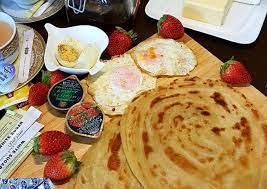

Once Musa (peace be upon him) asked Allah, "Is there anyone else who is as close as I am to You and can talk to You?" Allah Almighty said: O Musa! In the last time there will be an Ummah of Muhammad SAW and this Ummah will have a month in which they will have dry lips, thirsty tongues, dry eyes, hungry stomachs when they sit down to break the fast, then I will be very close to them. Musa, there is a distance of seventy curtains between you and me, but at the time of Iftar, there will not be a distance of even a curtain between that Ummah and me, and it is my responsibility to accept the supplications they ask. Will be. Subhan Allah
Abu Huraira (Allah be pleased with him) reported: When any one of you gets up in the morning in the state of fasting, he should neither use obscene language nor do any act of ignorance. And if anyone slanders him or quarrels with him, he should say:" I am fasting, I am fasting."

Start sahar
